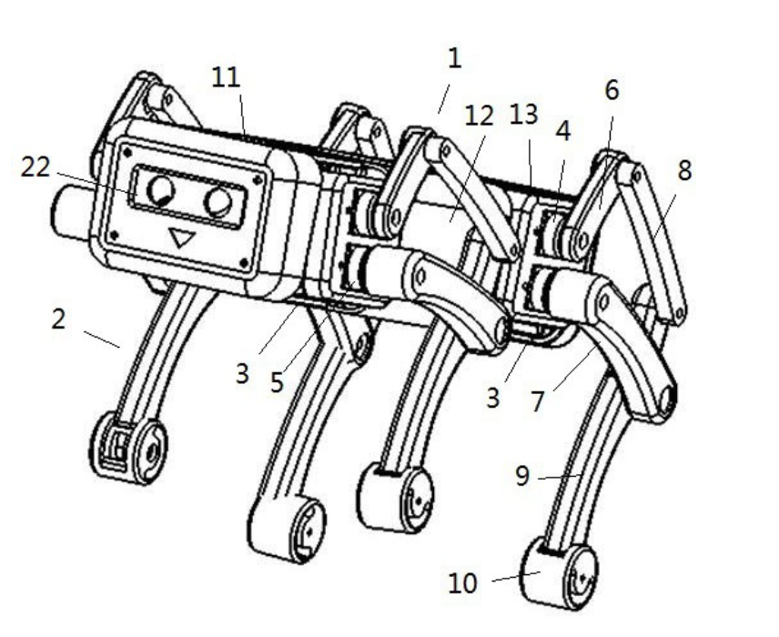

Mengyu Rao (饶孟宇)

|
本科生,
福州大学 |
教育经历
-
软件工程 (2019年9月-2023年6月)
科研经历
福建省网络计算与智能信息处理重点实验室 (2022年1月-至今)
CAS电磁空间信息重点实验室 (2021年11月 – 2022年1月)
智慧地铁福建省高校重点实验室 (2021年9月 – 2021年12月)
荣誉和奖赏
-
国家奖学金, （授予全国0.02%的本学生），2022 年 (奖金： 8000 人民币)
-
福州大学优秀学生干部, (授予全校前2%的学生)，2022年
-
福州大学三好学生, (授予全校前8%的学生)，2021年
- 福州大学优秀学生综合奖学金一等奖, (授予专业前3%的学生)， 共荣获三次 (总奖金: 45000 人民币)
-
福州大学优秀学生综合奖学金二等奖, (授予专业前8%的学生)，共荣获三次 (总奖金: 30000 人民币)
-
中国大学生工程实践与综合能力竞赛银奖（教育部、工业与信息化部、中国工程院主办），2021年
-
第七届中国国际 “互联网+” 大学生创新创业大赛铜奖（教育部等主办），2021年
-
第十一届 “锐智杯” 福建省大学生智能设计大赛一等奖，2022年
-
第八届全国大学生统计建模大赛福建赛区选拔赛三等奖，2022年
论文

|
A Dual-branch DeepFake Detection Focuses on Illumination Inconsistency (Under
Review)
饶孟宇, 周文柏, 张卫明, 俞能海 |

|
专利

|

|
|  |